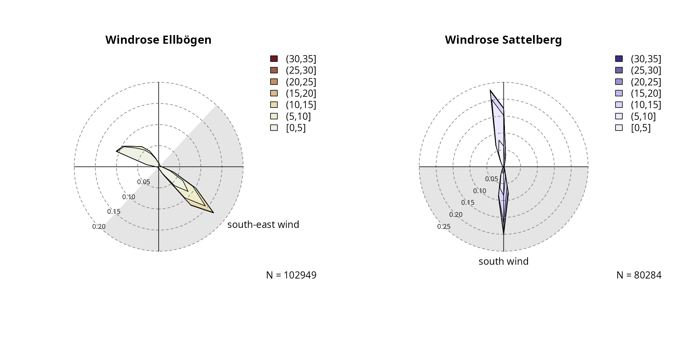
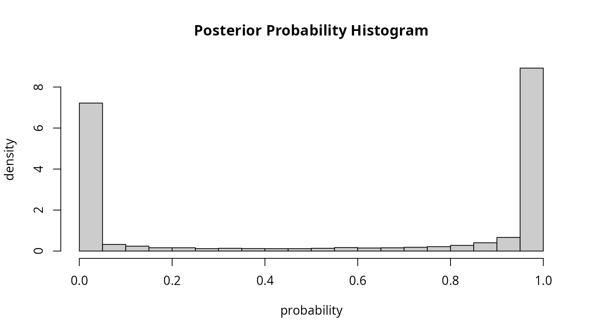
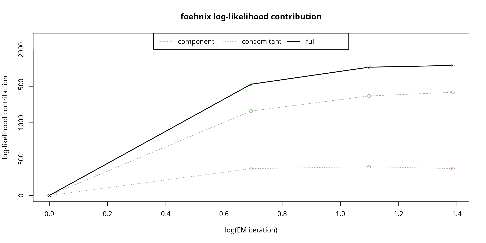

vignettes/ellboegen.Rmd
ellboegen.RmdData Set Description
The “Tyrolean” data set provides hourly observations from two stations, namely “Ellbögen” and “Sattelberg” located in Tyrol, Austria.
Ellbögen is our target station (valley site) located in the Wipp Valley, a north-south oriented alpine valley on the northern side of the European Alps. To the north the Wipp Valley opens into the Inn Valley (close to Innsbruck, the capitol of Tyrol), to the south the valley ends at a narrow gap in the main Alpine ridge called Brennerpass (\(1370~m\); the pass between Austria and Italy) flanked by mountains (\(>2100~m\)). The Wipp Valley is one of the lowest and most distinct cuts trough the Alpine mountain range and well known for south foehn (north of the Alps). Station Sattelberg serves as crest station and provides observations of the upstream air mass during south foehn events. The station is located on top of the mountain to the west of the pass.
Loading the Data Set
The call demodata("tyrol") returns the combined data set for both station (Ellbögen and Sattelberg). In addition, the potential temperature difference between the two stations is calculated by reducing the dry air temperature from “Sattelberg” to the height of “Ellbögen” (dry adiabatic lapse rate of 1K per 100m; stored on diff_t). Details can be found on the demodata reference page.
## dd ff rh t crest_dd crest_ff crest_rh crest_t
## 2006-01-01 01:00:00 171 0.6 90 -0.4 180 10.8 100 -7.8
## 2006-01-01 02:00:00 268 0.3 100 -1.8 186 12.5 100 -8.0
## 2006-01-01 03:00:00 115 5.2 79 0.9 181 11.3 100 -7.4
## diff_t
## 2006-01-01 01:00:00 2.87
## 2006-01-01 02:00:00 4.07
## 2006-01-01 03:00:00 1.97# Check if our object is a numeric zoo object:
c("is.zoo" = is.zoo(data),
"is.numeric" = is.numeric(data),
"is regular" = is.regular(data),
"is strictly regular" = is.regular(data, strict = TRUE))## is.zoo is.numeric is regular
## TRUE TRUE TRUE
## is strictly regular
## FALSE## tepmoral resolution (seconds) missing values
## 3600 87267The data set returned is a regular numeric zoo time series object. Note that the data set is not strictly regular (contains hourly observations, but some are missing) and contains quite some missing values (NA). This is not a problem as the functions and methods will take care of missing values and inflate the time series object (regular \(\rightarrow\) strictly regular).
Important: The names of the variables in the Tyrolean data set are the “standard names” on which most functions and methods provided by this package are based on. To be precise:
-
Valley station: air temperature
t, relative humidityrh, wind speedff, wind directiondd(meteorological, degrees \(\in [0, 360]\)) -
Crest station: air temperature
crest_t, relative humiditycrest_rh, wind speedcrest_ff, wind directioncrest_dd(\(\in [0, 360]\)) -
In addition: Potential temperature difference
diff_t(calculated bydemodata
… however, all functions arguments which allow to set custom names (see “Demos > Viejas (California, USA)” or function references).
After preparing the data set (regular or strictly regular zoo object withnumeric` values) we can investigate the observed wind information.
par(mfrow = c(1,2))
# Observed wind speed/wind direction "Ellboegen"
# Expects a variable 'dd' and 'ff' by default. Thus,
# 'ddvar'/'ffvar' do not have to be specified.
windrose(data,
main = "Windrose Ellbögen",
breaks = seq(0, 35, by = 5))
# Observed wind speed/wind direction "Sattelberg"
# Specify dd/ff of the crest station (ddvar, ffvar)
windrose(data, ddvar = "crest_dd", ffvar = "crest_ff",
main = "Windrose Sattelberg", hue = 270,
breaks = seq(0, 35, by = 5))
Based on prior knowledge and the plots above we define two “foehn wind sectors” as follows:
- At Ellbögen the observed wind direction (
dd) needs to be along valley within 43 and 223 degrees (south-easterly; a 180 degree sector). - At Sattelberg the observed wind direction (
crest_dd) needs to be within 90 and 270 degrees (south wind; 180 degree sector).
The wind sector(s) can be added to the windrose plots for visual justification, but well also be used later when estimating the foehnix classification model.
par(mfrow = c(1,2))
# Ellboegen with custom wind sector
windrose(data,
windsector = list("south-east wind" = c(43, 223)),
main = "Windrose Ellbögen",
breaks = seq(0, 35, by = 5))
# Observed wind speed/wind direction "Sattelberg"
# Specify custom variable names for dd/ff (crest_dd, crest_ff).
windrose(data, ddvar = "crest_dd", ffvar = "crest_ff",
windsector = list("south wind" = c(90, 270)),
main = "Windrose Sattelberg", hue = 270,
breaks = seq(0, 35, by = 5))
Estimate Classification Model
The most important step is to estimate the foehnix classification model. We use the following model assumptions:
-
Main variable:
diff_tis used as the main covariate to separate ‘foehn’ from ‘no foehn’ events (potential temperature difference). -
Concomitant variable:
rhandffat valley site (relative humidity and wind speed). -
Wind filters: two filters are defined.
dd = c(43, 223)for Ellbögen andcrest_dd = c(90, 270)for Sattelberg (see above). -
Option switch:
switch = TRUEas highdiff_tempindicate stable stratification (no foehn).
# Estimate the foehnix classification model
filter <- list(dd = c(43, 223), crest_dd = c(90, 270))
mod <- foehnix(diff_t ~ rh + ff,
data = data,
switch = TRUE,
filter = filter)Model Summary
##
## Call: foehnix(formula = diff_t ~ rh + ff, data = data, switch = TRUE,
## filter = filter)
##
## Number of observations (total) 113952 (5527 due to inflation)
## Removed due to missing values 38859 (34.1 percent)
## Outside defined wind sector 50665 (44.5 percent)
## Used for classification 24428 (21.4 percent)
##
## Climatological foehn occurance 18.36 percent (on n = 75093)
## Mean foehn probability 18.06 percent (on n = 75093)
##
## Log-likelihood: -55044.0, 7 effective degrees of freedom
## Corresponding AIC = 110101.9, BIC = 110158.6
## Time required for model estimation: 3.1 seconds
##
## Cluster separation (ratios close to 1 indicate
## well separated clusters):
## prior size post>0 ratio
## Component 1 (foehn) 0.56 13785 19437 0.71
## Component 2 (no foehn) 0.44 10643 22764 0.47
##
## ---------------------------------
##
## Concomitant model: z test of coefficients
## Estimate Std. error z value Pr(>|z|)
## cc.(Intercept) 0.812721 0.105710 7.6882 1.492e-14 ***
## cc.rh -1.029320 0.001446 -711.8479 < 2.2e-16 ***
## cc.ff 3.305436 0.012134 272.4222 < 2.2e-16 ***
## ---
## Signif. codes: 0 '***' 0.001 '**' 0.01 '*' 0.05 '.' 0.1 ' ' 1
## Number of IWLS iterations: 2 (algorithm converged)
## Dispersion parameter for binomial family taken to be 1.The data set contains \(N = 113952\) observations, \(108425\) from the data set itself (data) and \(5527\) due to inflation used to make the time series object strictly regular.
Due to missing data \(38859\) observations are not considered during model estimation (dd, crest_dd, diff_t, rh, or ff missing), \(50665\) and are not included in model estimation as they do not lie within the defined wind sectors (filter). Thus, the foehnix model is based on a total number of \(24428\) observations (or rows).
Once we have estimated the model we can check whether or not the two clusters are well separated (foehn and no foehn). This can be done by checking the “Cluster separation” summary provided by summary or checking the posterior probability plot:
# Cluster separation (summary)
summary(mod)$separation## prior size post>0 ratio
## Component 1 (foehn) 0.5596183 13785 19437 0.7092144
## Component 2 (no foehn) 0.4403817 10643 22764 0.4675365The separation matrix shows the prior probabilities, the size (number of observations assigned to each component; posterior probability), number of probabilities exceeding a threshold (default eps = 1e-4), and the ratio between the latter two. Ratios close to \(1.0\) indicate that the two clusters are well separated (\(ratio > 0.5\) are already good for this application).
The “posterior probability histogram” (plot(..., which = "posterior")) shows the empirical histogram of estimated probabilities (for within-windsector observations). Point masses around \(0.0\) and \(1.0\) indicate that we have two well separated clusters (the probability to fall in one of the clusters is always close to either \(0\) or \(1\)).

Estimated Coefficients
The following parameters are estimated for the two Gaussian clusters:
- No-foehn cluster: \(\mu_1 = 5.8\), \(\sigma_1 = 2.64\) (parameter scale)
- Foehn cluster: \(\mu_2 = 0.86\), \(\sigma_2 = 1.33\) (parameter scale)
- Concomitant model: positive
rheffect of -5.3 percent per on relative humidity and a positiveffeffect of +141.4 percent on wind speed
coef(mod)## Coefficients of foehnix model
## Model formula: diff_t ~ rh + ff
## foehnix family of class: Gaussian
##
## Coefficients
## mu1 sigma1 mu2 sigma2 (Intercept) rh
## 5.79908130 2.64068519 0.85860362 1.32845891 -1.19979850 -0.05476087
## ff
## 0.88116142In other words: if the relative humidity increases the probability that we observed foehn decreases, while the probability increases with increasing wind speed.
Graphical Model Assessment
A foehnix object comes with generic plots for graphical model assessment.
The following figure shows the ‘log-likelihood contribution’ of
- the main component (left hand side of formula),
- the concomitant model (right hand side of formula),
- and the full log-likelihood sum which is maximised by the optimization algorithm.
The abscissa shows (by default) the logarithm of the iterations during optimization.
# Log-likelihood contribution
plot(mod, which = "loglikcontribution")
In addition, the coefficient paths during optimization can be visualized:
# Coefficient path
plot(mod, which = 3L)
The left plot shows the parameters of the two components (\(\mu_1\), \(\log(\sigma_1)\), \(\mu_2\), \(\log(\sigma_2)\)), the right one the standardized coefficients of the concomitant model.
Last but not least a histogram with the two clusters is plotted. which = "hist"creates an empirical density histogram separating “no foehn” and “foehn” events adding the estimated distribution for these two clusters.
plot(mod, which = "hist")Time Series Plot
The Californian demo data set has non-standard variable names (by purpose). Thus, when calling tsplot (time series plot) we do have to manually specify these names.
# Some smaller quality issues in the data (should not be a big deal)
start <- as.POSIXct("2017-02-01")
end <- as.POSIXct("2017-02-12")
# As we dont have the standard names: re-specify variable names.
# In addition, use 'style = "advanced"' to show more details.
tsplot(mod, style = "advanced",
windsector = list(c(43, 223)),
start = start, end = end)
Hovmöler Diagram
# Default image plot
image(mod)
Customized plot which shows the “foehn frequency” for the interesting time period from August to April with custom colors and additional contour lines and custom aggregation period (two-weeks, 3-hourly).
# Customizing image plot
devtools::load_all("..")## Loading foehniximage(mod, deltad = 10L, deltat = 2*3600, contours = TRUE,
contour.col = "white", lwd = 2, labcex = 1.5,
col = colorspace::sequential_hcl(51, "Purple-Yellow", rev = TRUE),
xlim = c(212, 119), zlim = c(0, 0.5))
Compare Models (Gaussian)
The model above (diff_t ~ rh + ff) fits this station well, however, we could of course change the model specifications. Let us specify a second model solely based on the target station (valley site). This can be important in practice if:
- A upstream crest station is not available.
- The data availability for the crest station is limited due to outages, is no longer maintained, or has been installed much later than the valley station.
Thus, we estimate a second model mod_valley using the following model specification:
- Data set: Ellbögen (
ell;demodata("ellboegen")) - Main variable:
ff(wind speed) - Concomitants:
rf(relative humidity) - Wind filter:
dd\(\in [43, 223]\) (as above)
# Load demo data set
ell <- demodata("ellboegen")
# Estimate alternative model
mod_valley <- foehnix(ff ~ rh, data = ell,
filter = list(dd = c(43, 223)))
plot(mod_valley, which = "hist")
To compare the performance of the two models we can calculate a set of information criterion. The following matrix shows the sample size (N), log-likelihood sum (loglik), Akaike information criterion (AIC), Bayesian information criterion (BIC), and ignorance (IGN).
get_IC <- function(x) c(N = length(x$filter_obj$good), logLik(x), AIC(x), BIC(x), IGN(x))
IC <- sapply(list(mod = mod, mod_valley = mod_valley), get_IC)
round(IC, 1)## mod mod_valley
## N 24428.0 52390.0
## loglik -55044.0 -131631.0
## AIC 110101.9 263274.1
## BIC 110158.6 263327.3
## IGN 2.3 2.5Warning: due to the model specification the two models are based on different data sets (sample size strongly differs). Thus, we cannot directly compare the models using loglik, AIC, or BIC. IGN accounts for the sample size (mean negative log-likelihood), however, as the two models include different training data sets this is inconclusive.
For a fair and reliable comparison one should estimate both models on the very same data set, e.g., as follows:
# Load the demo data set once more
data_for_comparison <- demodata("tyrol")
# Extract the required variables
data_for_comparison <- subset(data_for_comparison, select = c(dd, ff, rh, diff_t, crest_dd))
# Remove all observations (rows) with missing values
data_for_comparison <- na.omit(data_for_comparison)
# Estimate alternative model "mod_comparison"
# Note: using dd/crest_dd filter for both models (required to
# end up with the same sample size)
filter <- list(dd = c(43, 223), crest_dd = c(90, 270))
mod_comparison <- foehnix(formula(mod),
data = data_for_comparison,
filter = filter)
mod_valley_comparison <- foehnix(formula(mod_valley),
data = data_for_comparison,
filter = filter)Again, calculate the information criteria:
# Information criteria
IC <- sapply(list(mod_comparison = mod_comparison,
mod_valley_comparison = mod_valley_comparison), get_IC)
round(IC, 1)## mod_comparison mod_valley_comparison
## N 24428.0 24428.0
## loglik -55044.0 -65793.6
## AIC 110101.9 131599.3
## BIC 110158.6 131647.9
## IGN 2.3 2.7Both models are now based on the same sample (\(N = 2.4428\times 10^{4}\)). Thus, we can compare the different scores. The more complex model (mod_comparison) outperforms the one solely based on observations from the valley site. Thus, the model mod should be preferred over the simpler one. However, in practice it is often useful to have both (more than one) model to fill in periods where e.g., the crest station does not provide data.
To fill gaps (missing values in the classification of model mod) we could combine the estimates of both models:
- First, take probabilities from model
mod. If not available, - take estimates from model
mod_valley.
# Combine results of both models:
prob <- merge(mod = fitted(mod), mod_valley = fitted(mod_valley))
# Number of missing entries
apply(prob, 2, function(x) sum(is.na(x)))## mod mod_valley
## 38859 11162# For demonstration purposes: find rows where mod is missing
# while mod_valley returns a probability:
idx <- which(is.na(prob$mod) & !is.na(prob$mod_valley))[1L] + seq(-3, 3)
head(prob[idx, ])## mod mod_valley
## 2006-01-01 07:00:00 0 0.000000000
## 2006-01-01 08:00:00 0 0.000000000
## 2006-01-01 09:00:00 0 0.000000000
## 2006-01-01 10:00:00 NA 0.001756782
## 2006-01-01 11:00:00 0 0.001629606
## 2006-01-01 12:00:00 0 0.000000000# Combine the two (take probability from mod if available,
# else from mod_valley; both missing: NA).
combine_prob <- function(x) {
if (all(is.na(x))) return(NA)
return(head(na.omit(x), n = 1))
}
prob <- apply(prob, 1, combine_prob)
head(prob[idx])## 2006-01-01 07:00:00 2006-01-01 08:00:00 2006-01-01 09:00:00
## 0.000000000 0.000000000 0.000000000
## 2006-01-01 10:00:00 2006-01-01 11:00:00 2006-01-01 12:00:00
## 0.001756782 0.000000000 0.000000000## [1] 11162start <- as.POSIXct("2010-02-01")
end <- as.POSIXct("2010-02-15")
# Time series plot to compare "mod" (the most complex model)
# and the four alternatives.
tsplot(list(mod = mod, mod_valley = mod_valley),
style = "advanced",
windsector = list(dd = c(43, 223)),
start = start, end = end)
Compare Models (Distributions)
# Formula and wind direction filter specification
filter <- list(dd = c(43, 223), crest_dd = c(90, 270))
formula <- "ff ~ rh"
# Gaussian models: Gaussian, left-censored Gaussian (at 0),
# and left-truncated Gaussian (at 0). Note that, for demonstration
# purposes, the censored/truncated models do 20 iterations.
mod_gauss <- foehnix(formula, data = data, family = "gaussian",
verbose = FALSE)
mod_cgauss <- foehnix(formula, data = data, family = "gaussian",
left = 0, tol = -Inf, maxit = 20,
verbose = FALSE)## Warning in iwls_logit(logitX, z, standardize = FALSE, maxit = tail(maxit, :
## IWLS solver for logistic model did not converge.## Warning in iwls_logit(logitX, post, beta = ccmodel$beta, standardize =
## FALSE, : IWLS solver for logistic model did not converge.
## Warning in iwls_logit(logitX, post, beta = ccmodel$beta, standardize =
## FALSE, : IWLS solver for logistic model did not converge.
## Warning in iwls_logit(logitX, post, beta = ccmodel$beta, standardize =
## FALSE, : IWLS solver for logistic model did not converge.
## Warning in iwls_logit(logitX, post, beta = ccmodel$beta, standardize =
## FALSE, : IWLS solver for logistic model did not converge.
## Warning in iwls_logit(logitX, post, beta = ccmodel$beta, standardize =
## FALSE, : IWLS solver for logistic model did not converge.
## Warning in iwls_logit(logitX, post, beta = ccmodel$beta, standardize =
## FALSE, : IWLS solver for logistic model did not converge.
## Warning in iwls_logit(logitX, post, beta = ccmodel$beta, standardize =
## FALSE, : IWLS solver for logistic model did not converge.
## Warning in iwls_logit(logitX, post, beta = ccmodel$beta, standardize =
## FALSE, : IWLS solver for logistic model did not converge.
## Warning in iwls_logit(logitX, post, beta = ccmodel$beta, standardize =
## FALSE, : IWLS solver for logistic model did not converge.
## Warning in iwls_logit(logitX, post, beta = ccmodel$beta, standardize =
## FALSE, : IWLS solver for logistic model did not converge.
## Warning in iwls_logit(logitX, post, beta = ccmodel$beta, standardize =
## FALSE, : IWLS solver for logistic model did not converge.
## Warning in iwls_logit(logitX, post, beta = ccmodel$beta, standardize =
## FALSE, : IWLS solver for logistic model did not converge.
## Warning in iwls_logit(logitX, post, beta = ccmodel$beta, standardize =
## FALSE, : IWLS solver for logistic model did not converge.
## Warning in iwls_logit(logitX, post, beta = ccmodel$beta, standardize =
## FALSE, : IWLS solver for logistic model did not converge.
## Warning in iwls_logit(logitX, post, beta = ccmodel$beta, standardize =
## FALSE, : IWLS solver for logistic model did not converge.
## Warning in iwls_logit(logitX, post, beta = ccmodel$beta, standardize =
## FALSE, : IWLS solver for logistic model did not converge.
## Warning in iwls_logit(logitX, post, beta = ccmodel$beta, standardize =
## FALSE, : IWLS solver for logistic model did not converge.
## Warning in iwls_logit(logitX, post, beta = ccmodel$beta, standardize =
## FALSE, : IWLS solver for logistic model did not converge.
## Warning in iwls_logit(logitX, post, beta = ccmodel$beta, standardize =
## FALSE, : IWLS solver for logistic model did not converge.
## Warning in iwls_logit(logitX, post, beta = ccmodel$beta, standardize =
## FALSE, : IWLS solver for logistic model did not converge.mod_tgauss <- foehnix(formula, data = data, family = "gaussian",
left = 0, tol = -Inf, maxit = 20, truncated = TRUE,
verbose = FALSE)## Warning in iwls_logit(logitX, z, standardize = FALSE, maxit = tail(maxit, :
## IWLS solver for logistic model did not converge.
## Warning in iwls_logit(logitX, z, standardize = FALSE, maxit = tail(maxit, :
## IWLS solver for logistic model did not converge.
## Warning in iwls_logit(logitX, z, standardize = FALSE, maxit = tail(maxit, :
## IWLS solver for logistic model did not converge.
## Warning in iwls_logit(logitX, z, standardize = FALSE, maxit = tail(maxit, :
## IWLS solver for logistic model did not converge.
## Warning in iwls_logit(logitX, z, standardize = FALSE, maxit = tail(maxit, :
## IWLS solver for logistic model did not converge.
## Warning in iwls_logit(logitX, z, standardize = FALSE, maxit = tail(maxit, :
## IWLS solver for logistic model did not converge.
## Warning in iwls_logit(logitX, z, standardize = FALSE, maxit = tail(maxit, :
## IWLS solver for logistic model did not converge.
## Warning in iwls_logit(logitX, z, standardize = FALSE, maxit = tail(maxit, :
## IWLS solver for logistic model did not converge.
## Warning in iwls_logit(logitX, z, standardize = FALSE, maxit = tail(maxit, :
## IWLS solver for logistic model did not converge.
## Warning in iwls_logit(logitX, z, standardize = FALSE, maxit = tail(maxit, :
## IWLS solver for logistic model did not converge.
## Warning in iwls_logit(logitX, z, standardize = FALSE, maxit = tail(maxit, :
## IWLS solver for logistic model did not converge.
## Warning in iwls_logit(logitX, z, standardize = FALSE, maxit = tail(maxit, :
## IWLS solver for logistic model did not converge.
## Warning in iwls_logit(logitX, z, standardize = FALSE, maxit = tail(maxit, :
## IWLS solver for logistic model did not converge.
## Warning in iwls_logit(logitX, z, standardize = FALSE, maxit = tail(maxit, :
## IWLS solver for logistic model did not converge.
## Warning in iwls_logit(logitX, z, standardize = FALSE, maxit = tail(maxit, :
## IWLS solver for logistic model did not converge.
## Warning in iwls_logit(logitX, z, standardize = FALSE, maxit = tail(maxit, :
## IWLS solver for logistic model did not converge.
## Warning in iwls_logit(logitX, z, standardize = FALSE, maxit = tail(maxit, :
## IWLS solver for logistic model did not converge.
## Warning in iwls_logit(logitX, z, standardize = FALSE, maxit = tail(maxit, :
## IWLS solver for logistic model did not converge.
## Warning in iwls_logit(logitX, z, standardize = FALSE, maxit = tail(maxit, :
## IWLS solver for logistic model did not converge.
## Warning in iwls_logit(logitX, z, standardize = FALSE, maxit = tail(maxit, :
## IWLS solver for logistic model did not converge.
## Warning in iwls_logit(logitX, z, standardize = FALSE, maxit = tail(maxit, :
## IWLS solver for logistic model did not converge.# Logistic models: logistic, left-censored logistic (at 0),
# and left-truncated logistic (at 0). Again, fixed number of
# iterations for the censored and truncated models.
mod_logis <- foehnix(formula, data = data, family = "logistic",
verbose = FALSE)
mod_clogis <- foehnix(formula, data = data, family = "logistic",
left = 0, tol = -Inf, maxit = 20,
verbose = FALSE)## Warning in iwls_logit(logitX, z, standardize = FALSE, maxit = tail(maxit, :
## IWLS solver for logistic model did not converge.
## Warning in iwls_logit(logitX, z, standardize = FALSE, maxit = tail(maxit, :
## IWLS solver for logistic model did not converge.
## Warning in iwls_logit(logitX, z, standardize = FALSE, maxit = tail(maxit, :
## IWLS solver for logistic model did not converge.
## Warning in iwls_logit(logitX, z, standardize = FALSE, maxit = tail(maxit, :
## IWLS solver for logistic model did not converge.
## Warning in iwls_logit(logitX, z, standardize = FALSE, maxit = tail(maxit, :
## IWLS solver for logistic model did not converge.
## Warning in iwls_logit(logitX, z, standardize = FALSE, maxit = tail(maxit, :
## IWLS solver for logistic model did not converge.
## Warning in iwls_logit(logitX, z, standardize = FALSE, maxit = tail(maxit, :
## IWLS solver for logistic model did not converge.
## Warning in iwls_logit(logitX, z, standardize = FALSE, maxit = tail(maxit, :
## IWLS solver for logistic model did not converge.
## Warning in iwls_logit(logitX, z, standardize = FALSE, maxit = tail(maxit, :
## IWLS solver for logistic model did not converge.
## Warning in iwls_logit(logitX, z, standardize = FALSE, maxit = tail(maxit, :
## IWLS solver for logistic model did not converge.
## Warning in iwls_logit(logitX, z, standardize = FALSE, maxit = tail(maxit, :
## IWLS solver for logistic model did not converge.
## Warning in iwls_logit(logitX, z, standardize = FALSE, maxit = tail(maxit, :
## IWLS solver for logistic model did not converge.
## Warning in iwls_logit(logitX, z, standardize = FALSE, maxit = tail(maxit, :
## IWLS solver for logistic model did not converge.
## Warning in iwls_logit(logitX, z, standardize = FALSE, maxit = tail(maxit, :
## IWLS solver for logistic model did not converge.
## Warning in iwls_logit(logitX, z, standardize = FALSE, maxit = tail(maxit, :
## IWLS solver for logistic model did not converge.
## Warning in iwls_logit(logitX, z, standardize = FALSE, maxit = tail(maxit, :
## IWLS solver for logistic model did not converge.
## Warning in iwls_logit(logitX, z, standardize = FALSE, maxit = tail(maxit, :
## IWLS solver for logistic model did not converge.
## Warning in iwls_logit(logitX, z, standardize = FALSE, maxit = tail(maxit, :
## IWLS solver for logistic model did not converge.
## Warning in iwls_logit(logitX, z, standardize = FALSE, maxit = tail(maxit, :
## IWLS solver for logistic model did not converge.
## Warning in iwls_logit(logitX, z, standardize = FALSE, maxit = tail(maxit, :
## IWLS solver for logistic model did not converge.
## Warning in iwls_logit(logitX, z, standardize = FALSE, maxit = tail(maxit, :
## IWLS solver for logistic model did not converge.mod_tlogis <- foehnix(formula, data = data, family = "logistic",
left = 0, tol = -Inf, maxit = 20, truncated = TRUE,
verbose = FALSE)## Warning in iwls_logit(logitX, z, standardize = FALSE, maxit = tail(maxit, :
## IWLS solver for logistic model did not converge.
## Warning in iwls_logit(logitX, z, standardize = FALSE, maxit = tail(maxit, :
## IWLS solver for logistic model did not converge.
## Warning in iwls_logit(logitX, z, standardize = FALSE, maxit = tail(maxit, :
## IWLS solver for logistic model did not converge.
## Warning in iwls_logit(logitX, z, standardize = FALSE, maxit = tail(maxit, :
## IWLS solver for logistic model did not converge.
## Warning in iwls_logit(logitX, z, standardize = FALSE, maxit = tail(maxit, :
## IWLS solver for logistic model did not converge.
## Warning in iwls_logit(logitX, z, standardize = FALSE, maxit = tail(maxit, :
## IWLS solver for logistic model did not converge.
## Warning in iwls_logit(logitX, z, standardize = FALSE, maxit = tail(maxit, :
## IWLS solver for logistic model did not converge.
## Warning in iwls_logit(logitX, z, standardize = FALSE, maxit = tail(maxit, :
## IWLS solver for logistic model did not converge.
## Warning in iwls_logit(logitX, z, standardize = FALSE, maxit = tail(maxit, :
## IWLS solver for logistic model did not converge.
## Warning in iwls_logit(logitX, z, standardize = FALSE, maxit = tail(maxit, :
## IWLS solver for logistic model did not converge.
## Warning in iwls_logit(logitX, z, standardize = FALSE, maxit = tail(maxit, :
## IWLS solver for logistic model did not converge.
## Warning in iwls_logit(logitX, z, standardize = FALSE, maxit = tail(maxit, :
## IWLS solver for logistic model did not converge.
## Warning in iwls_logit(logitX, z, standardize = FALSE, maxit = tail(maxit, :
## IWLS solver for logistic model did not converge.
## Warning in iwls_logit(logitX, z, standardize = FALSE, maxit = tail(maxit, :
## IWLS solver for logistic model did not converge.
## Warning in iwls_logit(logitX, z, standardize = FALSE, maxit = tail(maxit, :
## IWLS solver for logistic model did not converge.
## Warning in iwls_logit(logitX, z, standardize = FALSE, maxit = tail(maxit, :
## IWLS solver for logistic model did not converge.
## Warning in iwls_logit(logitX, z, standardize = FALSE, maxit = tail(maxit, :
## IWLS solver for logistic model did not converge.
## Warning in iwls_logit(logitX, z, standardize = FALSE, maxit = tail(maxit, :
## IWLS solver for logistic model did not converge.
## Warning in iwls_logit(logitX, z, standardize = FALSE, maxit = tail(maxit, :
## IWLS solver for logistic model did not converge.
## Warning in iwls_logit(logitX, z, standardize = FALSE, maxit = tail(maxit, :
## IWLS solver for logistic model did not converge.
## Warning in iwls_logit(logitX, z, standardize = FALSE, maxit = tail(maxit, :
## IWLS solver for logistic model did not converge.# Information criteria
get_IC <- function(x) c(N = length(x$filter_obj$good), logLik(x), AIC(x), BIC(x), IGN(x))
IC <- sapply(list("gaussian" = mod_gauss,
"gaussian censored" = mod_cgauss,
"gaussian truncated" = mod_tgauss,
"logistic" = mod_logis,
"logistic censored" = mod_clogis,
"logistic truncated" = mod_tlogis),
get_IC)
t(IC)## N loglik AIC BIC IGN
## gaussian 102918 -246274.4 492560.8 492618.1 2.392919
## gaussian censored 102918 -247830.5 495672.9 495730.2 2.408038
## gaussian truncated 102918 -246474.3 492960.6 493017.9 2.394861
## logistic 102918 -245950.4 491912.9 491970.1 2.389771
## logistic censored 102918 -249237.9 498487.9 498545.1 2.421714
## logistic truncated 102918 -246232.2 492476.5 492533.7 2.392509As the number of observations the classification is based on is the same for all models, we can directly compare the information criteria (i.e., AIC, BIC, log-likelihood). In all cases the “logistic” model seems to perform best among these models.